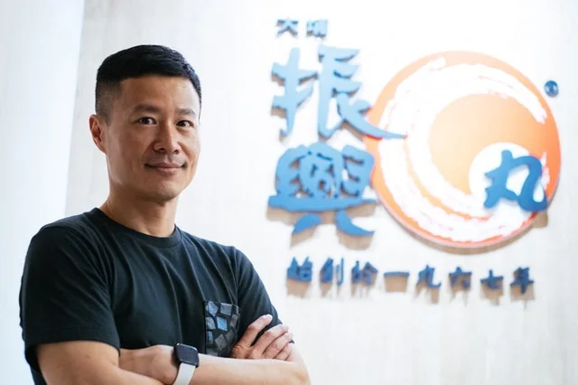
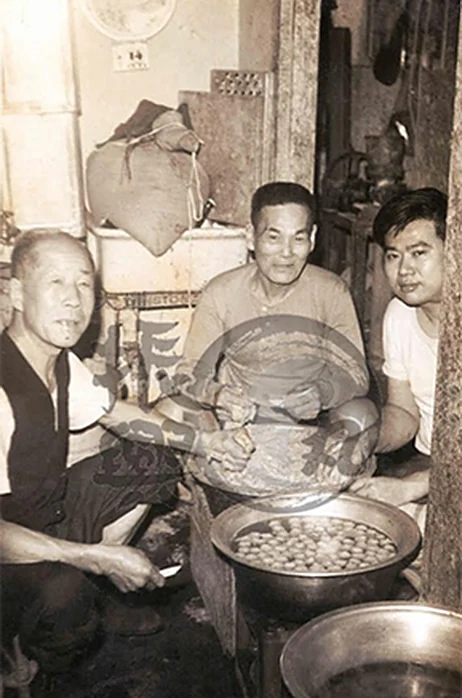
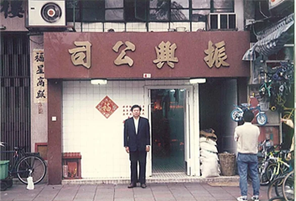

一九六七年，九龍城寨，用一根鐵棒錘打出第一批牛丸。今日在火炭全自動廠房，同一個做法，同一把刀。
「原味、天然、健康、盡心服務」是創辦人堅持的原則及承諾。
陳南奎 創辦人

早於創業之初，對原材料素質已有嚴謹要求，只選用上乘原肉材料，如原隻牛後腿肉、牛腱、墨魚肉、豬腿肉等，絕不會加入雜肉、碎肉、動物內臟等材料；時至今日，市面上的肉丸，為追求爽口彈牙及降低成本，盲目地使用不同類型添加劑及化學材料；而「振興肉丸」創辦人卻憑藉經驗及傳統手藝技術，堅持“原味、天然、健康”理念下，利用溫度掌控方法，保持肉質的天然彈性、原肉味道及肉汁，百分百把“原汁原味”的食物理念淋漓盡致地發揮，堪稱肉類製品的良心傑作。

「振興肉丸」創立，創辦人陳南奎先生原籍潮陽，五十年代初到香港，在九龍城寨以鐵棒錘打牛肉的傳統手法打造肉丸，以家庭形式經營肉丸製造及批發。
創業之初已對原材料有嚴謹要求，只選用上乘原肉：原隻牛後腿肉、牛腱、墨魚肉、豬腿肉，絕不加入雜肉、碎肉、動物內臟。

遷址到大埔經營，生產規模、產能、批發範疇逐步擴展。批發送貨服務是行內先驅——區內用自行車送貨，同時提供區外送貨，成為廣為人知的肉丸製造及批發商。
早於九十年代已引進台灣丸類製品，最為人熟悉的是芝士包心丸、仿龍蝦丸、魚籽包心丸。
第二代接班人接手，生產線由大埔地舖遷至火炭廠廈，建立全自動化廠房，技術與產能進一步提升。老店全面裝修並改名為「大埔振興高級肉丸專門店」，轉以零售為主，同時提供急凍海產、高級扒類、火鍋及燒烤食品。配合網上購物興起，開設「肥B美食速遞」網上零售，提供網上訂購及送貨服務。
於台灣發展生產線，製造自家配方的潮流台式丸類，炙燒芝心丸、仿干貝燒為「大埔振興」奠定台式丸供應商的基礎。
新一代掌舵人深明品牌肩負創辦人對食品製造的理想及信念，把品牌發展定為公司核心，並進行商標註冊；2009–2010 年間參與全港最受歡迎的食品展覽，推出「1 元 100 粒肉丸」及「1 元 1 隻龍蝦」宣傳，備受全港傳媒廣泛報導。
「大埔振興」創業至今接近半世紀，仍屹立不倒，贏盡業界與客戶的推崇及信賴。大埔振興將繼續堅持製造“原味·天然·健康”的食品，以“盡心服務”的專業態度為全港服務。